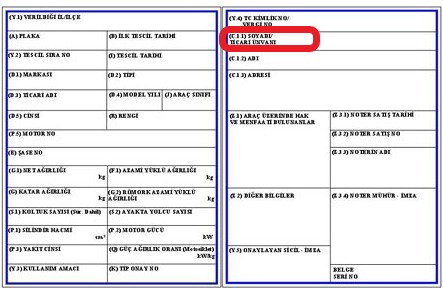

Для того чтобы заявка на получение карты автомобиля была обработана, необходимо соблюдать определенные условия и требования к документам:
1. Требования к письму-согласованию:
• Для легковых автомобилей, пикапов с двойной кабиной, а также для служебных автомобилей с максимальной вместимостью 21 пассажира требуется письмо-согласование.
• Для строительной техники, грузовиков, автобусов и служебных автомобилей с количеством мест не менее 22, письмо-согласование не требуется.
2. Связь с соответствующей компанией:
• До подачи заявки необходимо связаться с механическим отделом вашей контрактной компании (T2-IC JV, TSM Enerji, İÇTAŞ Nükleer, İÇ Endüstriyel, Akkuyu TST) для получения зеленой формы согласования.
• Контактные лица:
• Шенол Гюнёр senol.gungor@tsm-enerji.com
• Ибрахимхан Гюнсель ibrahimhan.gunsel@tsm-enerji.com
• Мураджан Голгелийоглу muratcan.golgelioglu@tsm-enerji.com
• Мелике Демир melike.demir@ictasnukleer.com.tr
• Исметхан Бюлбюль ismethan.bulbul@ictasendustriyel.com
• Айгерим Нургалиева a.nurgalieva@akkuyutst.com.tr
3. Документы для подачи заявки и структура файлов:
• Отправьте документы в одном Excel файле, упакованном в архив, с именованием по номеру автомобиля. Примеры имен файлов:
• 33 ABC 333 RUHSAT
• 33 ABC 333 SÖZLEŞME
• РИФАТ СЕФА КЮЧЮК КИМЛИК/ПРАВА (ВОДИТЕЛЬ)
• АККУЮ ТРУДОВАЯ КАРТА (ВОДИТЕЛЬ)
• ЗЕЛЕНАЯ ФОРМА СОГЛАСОВАНИЯ
4. Документы для временного въезда автомобиля (ежегодная карта):
• Руководство автомобиля
• Водительские права, удостоверение личности, трудовая карта Akkuyu
• Договор аренды автомобиля
• Excel файл с заявкой на карту автомобиля
• Электронная заявка по почте
• Зеленая форма согласования
5. Структура электронной почты:
• Тема письма должна быть оформлена в формате "НАЗВАНИЕ КОМПАНИИ – ЗАЯВКА НА КАРТУ АВТОМОБИЛЯ – НОМЕР АВТОМОБИЛЯ". Пример: NAZIM İNŞAAT – ЗАЯВКА НА КАРТУ АВТОМОБИЛЯ – 33 ABC 333.
• Отправьте письма на адреса: rifat.kucuk@t2ic.com и gonenc.caynak@t2ic.com
6. Дополнительные документы:
• Excel файл с заявкой на карту автомобиля
• Руководство, водительские права, удостоверение личности в формате PDF с именованием по номеру автомобиля (например, 33 ABC 333 RUHSAT)
• Первая и последняя страницы договора аренды автомобиля в формате PDF, именованные по сторонам договора (например, 33 ABC 333 SÖZLEŞME)
ВАЖНО: Документы должны быть четкими, полными и цветными.

Свидетельство о регистрации автомобиля должно быть подготовлено в виде фотографии или PDF-файла в одном экземпляре, четко читаемым и цветным.
Файл должен быть четким и понятным, в противном случае процесс подачи заявки может быть затруднен.
Для успешной обработки заявки необходимо подготовить копии водительских прав и удостоверения личности водителя, оформленные с обеих сторон на одном листе, четко читаемые и цветные. Не забудьте приложить этот документ вместе с другими файлами заявки.

Для автомобилей, арендованных у другой компании, при подаче заявки необходимо предоставить первую и последнюю страницы договора аренды в одном PDF файле.
Этот документ должен содержать подписи и печати обеих сторон, а также должны быть четко указаны даты начала и окончания договора.
Если эти детали не будут предоставлены, заявка не будет обработана.
Для подачи заявки на временные автомобили необходимо заполнить следующие данные в Excel-файле:
1. Статус запроса: Выберите один из заранее определенных вариантов: Новый запрос, Изменение водителя, Изменение автомобиля, Изменение типа карты, Неправильная заявка.
2. Запрашиваемый тип карты: Должна быть выбрана одна из действительных карт, например, Электронная Белая или Электронная Желтая.
3. Текущий тип карты: Укажите используемый тип карты.
4. Марка и модель автомобиля: Марка и модель автомобиля должны быть написаны полностью и правильно.
5. Тип автомобиля: Введите только действительный тип автомобиля в соответствии с предложенными вариантами.
Пожалуйста, не добавляйте или не пишите текст, не входящий в указанные варианты, иначе это может отрицательно повлиять на процесс подачи заявки.
ВАЖНО: Пожалуйста, не добавляйте или не пишите текст, не входящий в указанные варианты, иначе это может отрицательно повлиять на процесс подачи заявки.